물류관리사-2교시 (2015-07-04 기출문제)
1과목: 보관하역론
1. 다음 중 집중구매방식의 장점을 모두 고른 것은?
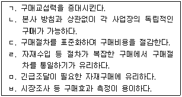
- ㄱ, ㄴ, ㄷ
- ㄱ, ㄷ, ㅁ
- ㄴ, ㄹ, ㅂ
- ㄱ, ㄷ, ㄹ, ㅂ
- ㄱ, ㄷ, ㄹ, ㅁ, ㅂ
(정답률: 57%)

2. A회사는 제품 판매량을 예측하기 위하여 단순지수평활법(Simple exponential smoothing method)을 사용하고 있다. 1월 제품 판매량을 92,000개로 예측하였으나 실판매량은 95,000개였고, 2월 실판매량은 90,000개였다. 3월의 제품 판매량 예측치는? (단, 지수평활계수 α=0.2)
- 90,880개
- 91,680개
- 92,080개
- 92,600개
- 93,120개
(정답률: 50%)
3. 운반순도의 원칙, 최소취급의 원칙, 수평직선의 원칙 등을 포함하는 하역합리화의 원칙은?
- 기계화 원칙
- 인터페이스 원칙
- 시스템화 원칙
- 중력이용의 원칙
- 하역경제성의 원칙
(정답률: 67%)
4. 포장기법에 관한 설명으로 옳지 않은 것을 모두 고른 것은?
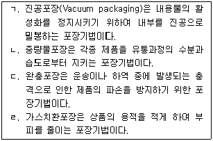
- ㄷ
- ㄱ, ㄴ
- ㄱ, ㄷ
- ㄴ, ㄹ
- ㄴ, ㄷ, ㄹ
(정답률: 42%)
5. A회사 제품의 연간 총 수요는 20,000개이고, 단위당 구매비용은 10원이다. 주문비용(Order cost)은 50원/회이고, 단위당 연간 재고유지비용(Inventory holding cost)은 구매비용의 20%이다. 경제적주문량(EOQ: Economic Order Quantity) 모델에서 연간 재고유지비용과 연간 주문비용의 합은?
- 1,000원
- 1,500원
- 2,000원
- 2,500원
- 3,000원
(정답률: 53%)
6. 물류단지시설에 관한 설명으로 옳지 않은 것은?
- 물류센터는 운송비와 생산비의 절충점을 찾아 총비용을 절감할 수 있다.
- 공동집배송단지는 참여업체들의 공동구매 및 보관을 가능하게 한다.
- 중계센터는 제품의 보관보다는 단순중계가 주요한 기능으로 크로스도킹(Cross docking) 등의 기능을 수행할 수 있다.
- 물류단계의 축소를 위해 물류터미널의 소형화 및 분산화가 이루어지고 있다.
- 복합물류터미널은 소규모 화물의 로트화를 통해 혼재기능을 수행한다.
(정답률: 69%)
7. 재고관리 지표에 관한 설명으로 옳지 않은 것은?
- 서비스율(%) = (납기 내 출하금액÷수주금액) ×100
- 백오더율(%) = (요구량÷결품량) ×100
- 연간 재고회전율(회) = 연간 총 매출액÷연간 평균 재고액
- 원가절감비율(%) = (원가절감액÷구매예산) × 100
- 재고율(%) = (입고금액÷출고금액) × 100
(정답률: 32%)
8. 자재소요계획(MRP: Material Requirement Planning)에 관한 설명으로 옳지 않은 것은?
- 자재관리 및 재고통제기법으로 종속수요품목의 소요량과 소요시기를 결정하기 위한 기법이다.
- 부품의 생산과 공급이 사용자의 필요에 의해서 결정되므로 고객 주문에서 시작되는 풀(pull) 시스템의 성격을 가진다.
- MRP 시스템의 입력요소는 주생산일정계획, 자재명세서, 재고기록철 등이다.
- 상위품목의 생산계획이 변경되면 부품의 수요량과 재고보충시기를 쉽게 갱신할 수 있다.
- 주생산일정계획에 따라 부품을 조달하며, 예측오차 및 불확실성에 대비한 안전재고(Safety stock)가 필요하다.
(정답률: 44%)
9. 다음 자재명세서(BOM: Bill Of Material)를 가지는 제품 X의 소요량이 50개일 때, 부품 H의 소요량은? (단, ( )안의 숫자는 상위품목 한 단위당 필요한 해당 품목의 소요량)
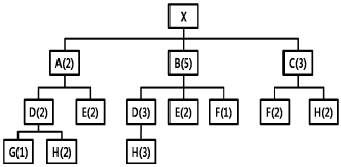
- 1,950개
- 2,450개
- 2,950개
- 3,450개
- 3,950개
(정답률: 56%)
10. 하역기기 선정의 방법에 관한 설명으로 옳지 않은 것은?
- 화물의 형상, 크기, 중량 등을 감안하여 선정한다.
- 작업량, 취급품목의 종류, 운반거리 및 범위, 통로의 크기 등 작업특성을 고려하여 선정한다.
- 화물의 흐름, 시설의 배치 및 건물의 구조 등 작업 환경특성을 고려하여 선정한다.
- 안전성, 신뢰성, 성능 등을 고려하여 선정한다.
- 단일 대안만을 고려한 후, 경제성을 검토하여 선정한다.
(정답률: 78%)
11. 하역에 관한 설명으로 옳은 것은?
- 하역은 고객서비스의 최전선이며, 비용과 서비스의 상충관계(Trade-off)를 전제로 수송과 배송간 윤활유 역할을 수행한다.
- 하역작업은 보관의 전후에 수반되는 작업으로 원재료의 조달에서만 하역이 행해진다.
- 수출품 선적을 위한 항공 및 항만하역은 하역의 범위에 포함되지 않는다.
- 하역은 화물에 대한 시간적 효용과 장소적 효용을 직접적으로 창출하는 활동이다.
- 하역작업은 물류활동 중 인력 의존도가 높은 분야로 기계화ㆍ자동화가 진행되고 있다.
(정답률: 58%)
12. ( )안에 들어갈 내용이 차례대로 나열된 것은?
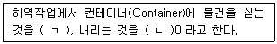
- ㄱ: Vanning, ㄴ: Devanning
- ㄱ: Lashing, ㄴ: Dunnage
- ㄱ: Packing, ㄴ: Unpacking
- ㄱ: Sorting, ㄴ: Assorting
- ㄱ: Insourcing, ㄴ: Outsourcing
(정답률: 71%)
13. 1년 365일 연중무휴로 24시간 운영되고 있는 수퍼마켓에서 제품 A의 1일 수요는 평균 100개, 표준편차는 4개인 정규분포(Normal distribution)를 따르며, 조달기간(Lead time)은 96시간으로 일정하다. 정량발주시스템(Fixed order quantity system)에서 안전재고(Safety stock)를 고려한 제품 A의 재발주점(ROP: ReOrder Point)은? (단, 안전계수는 1.5이다)
- 272개
- 400개
- 412개
- 512개
- 550개
(정답률: 37%)
14. 지게차 어태치먼트(Attachment)의 명칭이 올바르게 연결된 것은?
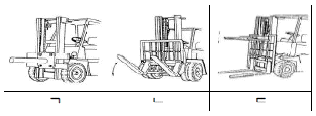
- ㄱ: 램(Ram), ㄴ: 힌지드 포크(Hinged fork), ㄷ: 로드 스태빌라이저(Load stabilizer)
- ㄱ: 램(Ram), ㄴ: 크레인 암(Crane arm), ㄷ: 로드 스태빌라이저(Load stabilizer)
- ㄱ: 회전 클램프(Rotating clamp), ㄴ: 힌지드 포크(Hinged fork), ㄷ: 로드 스태빌라이저(Load stabilizer)
- ㄱ: 회전 클램프(Rotating clamp), ㄴ: 스프레더(Spreader), ㄷ: 리치 포크(Reach fork)
- ㄱ: 리치 포크(Reach fork), ㄴ: 힌지드 포크(Hinged fork), ㄷ: 로드 스태빌라이저(Load stabilizer)
(정답률: 50%)
15. 랙(Rack)에 관한 설명으로 옳지 않은 것은?
- 암 랙(Arm rack)은 외팔지주걸이 구조로 기본 프레임에 암(Arm)을 결착하여 화물을 보관하는 랙으로 파이프, 가구, 목재 등 장척물 보관에 적합하다.
- 드라이브 인 랙(Drive in rack)은 회전율이 낮은 제품이나 계절적 수요제품에 경제적이다.
- 파렛트 랙(Pallet rack)은 주로 파렛트에 쌓아올린 물품의 보관에 이용한다.
- 적층 랙(Mezzanine rack)은 상품의 보관효율과 공간 활용도가 높다.
- 드라이브 스루 랙(Drive through rack)은 넓은 장소에서 다른 종류의 물품을 많이 보관할 경우 유용하다.
(정답률: 56%)
16. 자가창고와 영업창고를 비교하여 설명한 것 중 옳지 않은 것은?
- 영업창고는 자가창고에 비해 입지선정이 용이하다.
- 자가창고는 영업창고에 비해 자사의 특수 물품에 적합한 구조와 하역설비를 갖출 수 있다.
- 영업창고는 자가창고에 비해 보관 관련 비용에 대한 지출을 명확히 알 수 있는 장점이 있다.
- 영업창고는 자가창고에 비해 계절적 수요변동에 탄력적으로 대응할 수 있어 비수기에도 효율적인 운영이 가능하다.
- 자가창고는 영업창고에 비해 낮은 고정비를 갖기 때문에 재무유동성이 향상된다.
(정답률: 69%)
17. 오더피킹(Order picking)의 생산성 향상을 위한 방법에 관한 설명으로 옳지 않은 것은?
- 동시에 피킹하는 경우가 많은 물품들은 서로 원거리에 배치한다.
- 분류시간과 오류를 최소화하기 위해 작업자의 편의를 고려한 운반기기를 설계한다.
- 피킹 빈도가 높은 물품일수록 피커의 접근이 쉬운 장소에 저장한다.
- 혼잡을 피하기 위하여 피킹장소 간 피킹활동을 조절한다.
- 피킹의 오류를 최소화하기 위해 서류와 표시를 체계화한다.
(정답률: 62%)
18. 3가지 제품을 보관하는 창고의 기간별 파렛트(Pallet) 저장소요공간이 다음 표와 같을 때, (ㄱ) 임의위치저장(Randomized storage)방식과 (ㄴ) 지정위치저장(Dedicated storage)방식으로 각각 산정된 창고의 저장소요공간을 차례대로 나열한 것은?
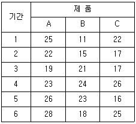
- ㄱ: 63, ㄴ: 64
- ㄱ: 63, ㄴ: 78
- ㄱ: 73, ㄴ: 78
- ㄱ: 78, ㄴ: 64
- ㄱ: 78, ㄴ: 73
(정답률: 50%)
19. 연속된 4개의 화물 분류 작업장별 사이클 타임(Cycle time)이 다음과 같을 때 공정효율(Balance efficiency)은?
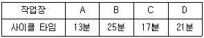
- 65%
- 68%
- 71%
- 76%
- 79%
(정답률: 41%)
20. 물류센터 작업의 효율화를 위한 라인밸런싱(Line balancing)의 목적으로 옳지 않은 것은?
- 장비고장 발생 및 오작동 감소
- 작업공정 내의 재공품 감소
- 가동률 향상
- 리드타임(Lead time) 향상
- 애로공정 개선으로 생산성 향상
(정답률: 30%)
21. 물류시설 투자타당성 분석에 관한 설명으로 옳지 않은 것은?
- 물류시설 투자타당성 분석에서 편익은 운송비용절감, 보관ㆍ하역비용절감 등이며, 비용은 토지구입비, 건설비, 운영 및 유지관리비 등으로 볼 수 있다.
- 순현재가치(NPV: Net Present Value)는 사업의 경제성을 평가하는 척도 중 하나로 현재가치로 환산된 장래의 연차별 기대현금유입의 합계에서 현재가치로 환산된 장래의 연차별 기대현금유출의 합계를 뺀 값을 의미한다.
- 투자이익률(ROI: Return On Investment)은 순이익을 투자액으로 나눈 것으로 투자이익률이 클수록 높은 투자타당성을 갖는다.
- 비용편익비(B/C: Benefit/Cost ratio)는 편익을 비용으로 나눈 비율을 뜻하며 비용편익비가 클수록 높은 투자타당성을 갖는다.
- 내부수익률(IRR: Internal Rate of Return)은 기대 현금유입과 기대현금유출의 현재가치 합계가 동일하게 되는 수준의 할인율을 의미하며, 낮은 내부수익률이 산출되는 대안일수록 수익성이 좋다고 판단할 수 있다.
(정답률: 60%)
22. 물류센터의 활동에 관한 설명으로 옳지 않은 것은?
- 인입(Putaway)은 운송수단으로부터 물자를 내려놓는 활동이다.
- 보관(Storage)은 주문을 대기하는 동안 물자를 물리적으로 저장해 두는 활동이다.
- 피킹(Picking)은 특정 주문에 대하여 보관된 품목을 선별하여 출하를 위한 공정으로 넘기는 활동이다.
- 포장(Package)은 화물취급 단위에 의한 표준화된 화물형태로 결합하는 활동이다.
- 분류(Assorting)는 오더별로 배분하여 주문품의 품목을 갖추는 활동이다.
(정답률: 52%)
23. 물류센터 입지 선정시 고려사항에 관한 설명으로 옳지 않은 것은?
- 유통물류센터의 입지를 선정할 때, 각 운송수단에 대한 운송비를 고려하여야 한다.
- 유통물류센터의 입지를 선정할 때, 고객의 지역적 분포, 시장의 크기 등을 고려하여 물류센터의 입지를 선정하여야 한다.
- 조달물류센터의 입지를 선정할 때, 물자의 흐름을 중심으로 공장 전체의 합리적 레이아웃을 기준으로 결정되어야 한다.
- 조달물류센터의 입지를 선정할 때, 토지가격만을 고려하여 외곽지역에 입지를 결정하여야 한다.
- 유통물류센터의 입지를 선정할 때, 교통의 편리성, 경쟁사 물류거점의 위치, 관계법규, 투자 및 운영비용 등의 요소를 종합적으로 고려하여야 한다.
(정답률: 67%)
24. 서울, 대전, 부산에 수요지를 가진 X회사가 두 곳의 입지 중 한 곳에 물류센터를 건설할 계획이다. 서울의 수송량이 500톤/월, 대전의 수송량이 300톤/월, 부산의 수송량이 200톤/월이고 거리 및 톤킬로(ton-km)당 수송비가 다음과 같을 때, 거리 및 수송량을 고려한 최적 입지와 총 수송비용으로 옳은 것은?
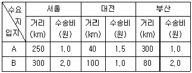
- A - 177,500원
- A - 203,000원
- A - 362,000원
- B - 203,000원
- B - 362,000원
(정답률: 50%)
25. 오더피킹(Order picking) 방식에 관한 설명으로 옳지 않은 것은?
- 1인1건 방식: 1인의 피커가 1건의 주문전표에서 요구하는 물품을 피킹하는 방식이다.
- 존피킹(Zone picking) 방식: 여러사람의 피커가 각각 자기가 분담하는 선반의 작업 범위에서 물품을 피킹하는 방식이다.
- 일괄 오더 피킹 방식: 여러 건의 전표에 있는 물품을 한 번에 피킹하기 때문에 재분류 작업이 발생하는 방식이다.
- 릴레이(Relay) 방식: 여러사람의 피커가 각각 자신이 분담하는 종류나 선반의 작업범위를 정해놓고 피킹하여 다음 피커에게 넘겨주는 방식이다.
- 캐러셀(Carousel) 방식: 사람이 걸어서 또는 오더 피킹 기계 등에 타고 가서 피킹하는 방식이다.
(정답률: 69%)
26. 새로운 물류센터를 건설하고자 한다. 다음 그림에서 A, B는 화물의 공급지로 공급량은 각각 100톤/월, 400톤/월 이며, C, D는 수요지로 수요량은 각각 200톤/월, 300톤/월 이다. 무게중심법에 의한 신규 물류센터의 최적 입지좌표(X, Y)는?
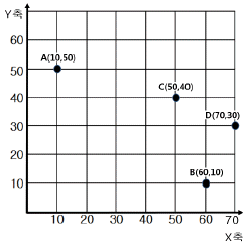
- (56, 26)
- (56, 32)
- (61, 26)
- (61, 32)
- (62, 32)
(정답률: 60%)
27. 물류 모듈화의 대상에 관한 설명으로 옳지 않은 것은?
- 파렛트(Pallet)는 유닛로드(Unit load)를 구성하는 물품적재용기이며, 파렛트에 포장화물을 적재하기 위하여 파렛타이저(Palletizer)가 사용되기도 한다.
- 보관 랙(Rack)은 모듈화된 화물의 보관을 위한 장치로 사용된다.
- 집합포장기기는 유닛로드를 구성하는 포장화물의 일체화와 화물무너짐 방지를 하기 위한 기기를 말한다.
- 물류정보시스템은 물류 기능들을 유기적으로 결합하여 조정역할을 하며, 고객서비스 향상과 물류비 절감 등의 물류합리화를 지원할 수 있다.
- DAS(Digital Assorting System)는 운반기기로서 항만에서의 중량화물을 운반하는데 사용된다.
(정답률: 79%)
28. 파렛트 풀 시스템(Pallet pool system)에 관한 설명으로 옳지 않은 것은?
- 표준 파렛트를 다량으로 보유하여 불특정 다수의 화주에게 파렛트를 공급한다.
- 파렛트 풀 시스템을 통하여 일관파렛트화를 실현하고, 파렛트에 대한 투자비용을 절감할 수 있다.
- 렌탈방식 풀 시스템은 렌탈회사 데포(Depot)에서 화주까지의 공파렛트 수송이 필요하다.
- 전체적인 파렛트 수량이 늘어나고, 규격화 및 표준화가 촉진된다.
- 자사의 필요규격을 임의로 선택하여 도입하기가 어렵다.
(정답률: 50%)
29. 파렛트(Pallet)의 종류와 설명으로 옳지 않은 것은?
- 스키드 파렛트(Skid pallet): 핸드리프트로 하역할 수 있도록 만들어진 단면형 파렛트이다.
- 시트 파렛트(Sheet pallet): 1회용 파렛트로 목재나 플라스틱으로 제작되어 가격이 저렴하고 가벼우나 하역을 위하여 Push-Pull 장치를 부착한 지게차가 필요하다.
- 사일로 파렛트(Silo pallet): 주로 분말체를 담는데 사용되며, 밀폐상의 측면과 뚜껑을 가지고 하부에 개폐장치가 있는 상자형 파렛트이다.
- 롤 상자형 파렛트(Roll box pallet): 받침대 밑면에 바퀴가 달리고 상부구조가 박스인 파렛트로 최근에는 배송용으로 많이 사용된다.
- 기둥 파렛트(Post pallet): 주로 액체를 취급하는데 사용되며 밀폐상의 측면과 뚜껑을 가지며 상부 또는 하부에 출입구가 있는 상자형 파렛트이다.
(정답률: 53%)
30. T11형 표준 규격 파렛트에 가로 700mm, 세로 400mm, 높이 300mm인 제품을 핀휠 방식으로 적재할 경우에 바닥면적 적재율은 약 얼마인가? (단, 소수점 첫째 자리에서 반올림한다)
- 87%
- 90%
- 93%
- 96%
- 99%
(정답률: 58%)
31. 항공하역에서 사용되는 장비가 아닌 것은?
- 트랜스포터(Transporter)
- 터그카(Tug car)
- 돌리(Dolly)
- 데릭(Derrick)
- 이글루(Igloo)
(정답률: 64%)
32. 다음 보기에서 설명하는 내용들의 올바른 명칭은?
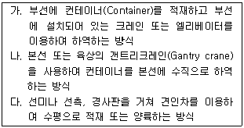
- 가: Lift on-Lift off, 나: Roll on-Roll off, 다: Float on-Float off
- 가: Lift on-Lift off, 나: Float on-Float off, 다: Roll on-Roll off
- 가: Roll on-Roll off, 나: Float on-Float off, 다: Lift on-Lift off
- 가: Roll on-Roll off, 나: Lift on-Lift off, 다: Float on-Float off
- 가: Float on-Float off, 나: Lift on-Lift off, 다: Roll on-Roll off
(정답률: 63%)
33. 다음은 임의의 부품에 대한 총소요량, 기초재고가 주어진 자재소요계획표의 일부이다. 부품의 조달기간(Lead Time)이 1주이고, 발주량은 100의 배수로 할 때, 1주부터 5주까지의 계획발주량의 합은?
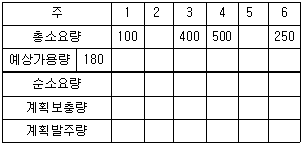
- 1,000
- 1,070
- 1,100
- 1,200
- 1,250
(정답률: 39%)
34. 위험물 포장 조건에 관한 설명으로 옳지 않은 것은?
- 적합한 위험물 표시ㆍ표찰을 부착해야 한다.
- 포장재가 내용물과 반응하지 않도록 해야 한다.
- 충격에 민감한 위험물의 경우 완충포장이 필요하다.
- 화재 및 폭발의 위험성이 높은 화물의 경우 산소 충전포장이 필요하다.
- 동일 외장용기에 서로 다른 위험물 포장을 금지해야 한다.
(정답률: 70%)
35. 보관의 원칙으로 옳은 것을 모두 고른 것은?
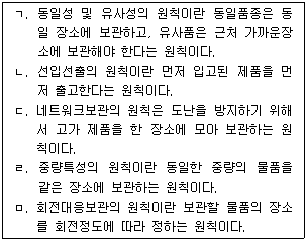
- ㄱ, ㄴ, ㄹ
- ㄱ, ㄴ, ㅁ
- ㄱ, ㄷ, ㄹ
- ㄴ, ㄷ, ㅁ
- ㄴ, ㄹ, ㅁ
(정답률: 53%)
36. 보관과 창고에 관한 설명으로 옳지 않은 것은?
- 보관은 재화를 물리적으로 보존하고 관리하는 것으로 물품의 생산과 소비의 시간적 거리를 조정한다.
- 보관은 생산과 판매의 조정 및 완충기능을 수행한다.
- 창고에 재고를 보관함으로써 대량의 화물을 운송하게 되어 수송비가 증가한다.
- 수요의 변동폭이 클수록 창고의 안전재고수준이 증가한다.
- 창고는 단순한 저장 기능뿐만 아니라 분류, 유통가공, 재포장 등의 역할도 수행한다.
(정답률: 53%)
37. 다음 표는 X회사의 각 주차별 기말재고량을 나타낸 것이다. 이에 근거하여 6월의 재고유지비용(Inventory holding cost)은? (단, 평균재고량은 해당 월의 기초와 기말재고량의 산술평균으로 구하고, 제품가격은 개당 10,000원, 단위당 월간 재고유지비용은 제품가의 10%이다)
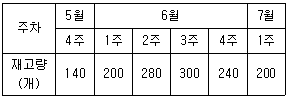
- 140,000원
- 160,000원
- 190,000원
- 226,667원
- 255,000원
(정답률: 55%)
38. 효율적인 수송을 위해 갖추어진 집배중계 및 배송처에 컨테이너가 CY(Container Yard)에 반입되기 전 야적된 상태에서 컨테이너를 적재시키는 장소는?
- 데포(Depot)
- 스톡 포인트(Stock point)
- CFS(Container Freight Station)
- 복합물류터미널
- 집배송센터
(정답률: 35%)
39. 어느 정도 직접수익이 가능한 도로, 철도, 항만 등 물류기반시설에 대해 준공과 동시에 해당 시설의 소유권이 국가 또는 지방자치단체에 귀속되며, 사업시행자에게 일정기간의 시설관리운영권을 인정하는 방식은?
- 운영 후 이전 방식(BOT: Build Operate Transfer)
- 이전 후 운영 방식(BTO: Build Transfer Operate)
- 임대운영 후 이전 방식(BLT: Build Lease Transfer)
- 소유권을 갖고 임대하는 방식(BOL: Build Own Lease)
- 소유권을 갖고 운영하는 방식(BOO: Build Own Operate)
(정답률: 39%)
40. 물류창고의 수의 증감에 따른 영향에 관한 설명으로 옳지 않은 것은?
- 물류창고의 수가 증가할수록 재고유지 및 관리비용이 증가한다.
- 물류창고의 수가 증가할수록 수송비용은 감소하며 배송비용은 증가한다.
- 물류창고의 수가 감소할수록 안전재고의 합은 감소한다.
- 물류창고의 수가 증가할수록 고객접근성은 증가한다.
- 물류창고의 수가 증가할수록 창고고정비는 증가한다.
(정답률: 67%)
2과목: 물류관련법규
41. 물류정책기본법상 물류현황조사에 관한 내용이다. ( )안에 들어갈 용어가 순서대로 옳은 것은?
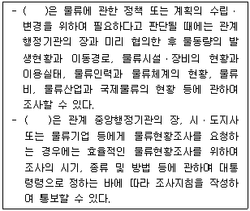
- 국토교통부장관, 해양수산부장관
- 국토교통부장관, 국토교통부장관 및 해양수산부장관
- 국토교통부장관 또는 해양수산부장관, 국토교통부장관
- 국토교통부장관 및 해양수산부장관, 국토교통부장관 및 해양수산부장관
- 해양수산부장관, 해양수산부장관
(정답률: 53%)
42. 물류정책기본법령상 국토교통부장관이 국가물류통 합정보센터의 운영자로 지정할 수 있는 자를 모두 고른 것은?
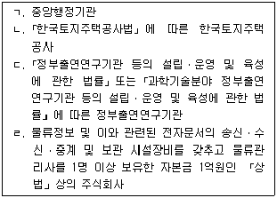
- ㄱ, ㄴ
- ㄱ, ㄴ, ㄷ
- ㄱ, ㄷ, ㄹ
- ㄴ, ㄷ, ㄹ
- ㄱ, ㄴ, ㄷ, ㄹ
(정답률: 40%)
43. 물류정책기본법령상 시ㆍ도지사가 국토교통부장관으로부터 권한을 위임받아 수행하는 업무로 명시되지 않은 것은?
- 국제물류주선업의 등록 및 변경등록
- 국제물류주선업의 승계 신고의 수리
- 국제물류주선업에 필요한 소요자금의 융자 등 지원
- 국제물류주선업의 등록의 취소 및 사업의 정지 명령
- 국제물류주선업의 휴업 및 해산 신고의 수리
(정답률: 23%)
44. 물류정책기본법령상 국토교통부장관이 관계 중앙행정기관의 장과 협의하여 물류기업 또는 화주기업에 대해 행정적ㆍ재정적 지원을 할 수 있는 물류보안 활동으로 명시되지 않은 것은?
- 물류보안 관련 시설 유지
- 물류보안 관련 장비의 개발ㆍ도입
- 물류보안 관련 프로그램의 운영
- 물류보안 사고 발생의 예방조치
- 물류보안 관련 제도ㆍ표준 등 국가 물류보안 시책의 준수
(정답률: 37%)
45. 물류정책기본법령상 물류사업의 범위에 관한 설명으로 옳지 않은 것은?
- 화물자동차운송사업은 육상화물운송업에 해당한다.
- 검량사업은 항만운송사업에 해당한다.
- 집배송단지 운영업은 물류터미널운영업에 해당한다.
- 선박관리업은 해운부대사업에 해당한다.
- 상업서류송달업은 화물취급업에 해당한다.
(정답률: 22%)
46. 물류정책기본법령상 공공기관이 아닌 자로서 단위 물류정보망 전담기관으로 지정받을 수 있는 자의 시설장비와 인력 등의 기준에 해당하지 않는 것은?
- 물류관리사 1명 이상을 보유할 것
- 자본금이 2억원 이상인「상법」에 따른 주식회사일 것
- 「국가기술자격법」에 따른 정보통신분야(기술ㆍ기능 분야)에서 3년 이상 근무한 경력이 있는 사람 1명 이상을 보유할 것
- 물류정보 및 이와 관련된 전자문서의 송신ㆍ수신ㆍ중계 및 보관 시설장비를 갖출 것
- 단위물류정보망을 안전하게 운영하기 위한 보호시설장비를 갖출 것
(정답률: 25%)
47. 물류정책기본법상 물류정보화의 촉진에 관한 일부 규정이다. ( )안에 해당될 수 없는 것은?
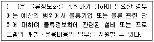
- 관세청장
- 국토교통부장관
- 기획재정부장관
- 해양수산부장관
- 산업통상자원부장관
(정답률: 40%)
48. 물류정책기본법상 국제물류의 촉진 및 지원에 관한 설명으로 옳지 않은 것은?
- 국토교통부장관ㆍ해양수산부장관 또는 시ㆍ도지사는 국제물류협력체계 구축, 국내 물류기업의 해외진출 등 국제물류 촉진을 위한 시책을 마련하여야 한다.
- 국토교통부장관 및 해양수산부장관이 물류기업의 국제물류활동을 촉진시키기 위하여 필요한 행정적ㆍ재정적 지원을 하려는 경우에는 중복을 방지하기 위하여 미리 시ㆍ도지사와 협의하여야 한다.
- 국토교통부장관ㆍ해양수산부장관 또는 시ㆍ도지사는 물류관련협회가 추진하는 외국 물류기업의 유치사업에 대하여 예산의 범위에서 필요한 경비의 전부나 일부를 지원할 수 있다.
- 국토교통부장관 및 해양수산부장관은 범정부차원의 지원이 필요한 국가간 물류협력체의 구성 또는 정부간 협정의 체결 등에 관하여는 미리 국가물류정책위원회의 심의를 거쳐야 한다.
- 국토교통부장관ㆍ해양수산부장관 또는 시ㆍ도지사는 효율적인 투자유치를 위하여 필요하다고 인정되는 경우에는 재외공관 등 관계 행정기관 및「대한무역투자진흥공사법」에 따른 대한무역투자진흥공사 등 관련 기관ㆍ단체에 협조를 요청할 수 있다.
(정답률: 28%)
49. 물류시설의 개발 및 운영에 관한 법령상 물류단지의 개발 및 운영에 관한 설명으로 옳지 않은 것은?
- 물류단지지정권자는 국가를 물류단지개발사업의 시행자로 지정할 수 있다.
- 시행자가 승인받은 물류단지개발실시계획 중 사업시행 면적을 초과하지 아니하는 범위에서 사업을 분할하여 시행하는 경우의 면적변경이 있는 때에는 물류단지지정권자로부터 승인을 받아야 한다.
- 물류단지지정권자는 승인한 물류단지개발실시계획을 변경승인한 때에는 대통령령으로 정하는 사항을 관보 또는 시ㆍ도의 공보에 고시하고, 관계 서류의 사본을 관할 시장ㆍ군수ㆍ구청장에게 보내야 한다.
- 물류단지지정권자가 실시계획을 승인 또는 변경승인하는 경우에「사도법」제4조에 따른 사도(私道)개설의 허가에 관하여 관계 행정기관의 장과 협의한 사항은 해당 허가를 받은 것으로 본다.
- 「상법」에 따라 설립된 법인이 물류단지개발사업의 시행자인 경우에는 사업대상 토지면적의 3분의 2 이상을 매입하여야 토지등을 수용하거나 사용할 수 있다.
(정답률: 32%)
50. 물류시설의 개발 및 운영에 관한 법령상 물류단지에 관한 설명으로 옳지 않은 것은?
- 100만 제곱미터 이하의 물류단지는 관할 시ㆍ도지사가 지정한다.
- 국토교통부장관은 물류단지의 개발에 관한 기본지침을 작성하여 관보에 고시하여야 한다.
- 물류단지지정권자는 물류단지를 지정하려는 때에는 주민 및 관계 전문가의 의견을 들어야 하고 타당하다고 인정하는 때에는 그 의견을 반영하여야 한다. 다만, 국방상 기밀(機密)사항이거나 대통령령으로 정하는 경미한 사항인 경우에는 의견 청취를 생략할 수 있다.
- 물류단지 안에서 재해복구 또는 재난수습에 필요한 응급조치를 위하여 토석의 채취행위를 하려는 자는 시장ㆍ군수ㆍ구청장의 허가를 받지 아니하고 토석의 채석행위를 할 수 있다.
- 물류단지로 지정ㆍ고시된 날부터 3년 이내에 그 물류단지의 전부 또는 일부에 대하여 물류단지개발실시계획의 승인을 신청하지 아니하면 그 기간이 지난 다음 날 해당 지역에 대한 물류단지의 지정이 해제된 것으로 본다.
(정답률: 35%)
51. 물류시설의 개발 및 운영에 관한 법령상 물류단지의 개발 및 운영에 관한 설명으로 옳지 않은 것은?
- 「상법」에 따라 설립된 법인인 시행자가 물류단지개발사업의 시행으로 새로 설치한 공공시설은 그 시설을 관리할 국가 또는 지방자치단체에 무상으로 귀속되고, 용도가 폐지되는 국가 또는 지방자치단체 소유의 재산은 그 시행자에게 무상으로 귀속된다.
- 물류단지에 필요한 전기시설ㆍ전기통신설비ㆍ가스공급시설 또는 지역난방시설은 대통령령으로 정하는 범위에서 해당 지역에 전기ㆍ전기통신ㆍ가스 또는 난방을 공급하는 자가 비용을 부담하여 설치하여야 한다.
- 물류단지개발사업의 시행자의 요청에 따라 전기간선시설(電氣幹線施設)을 땅 속에 설치하는 경우에는 전기를 공급하는 자와 땅 속에 설치할 것을 요청하는 자가 각각 100분의 50의 비율로 그 설치비용을 부담한다.
- 국가는 물류단지개발사업에 필요한 문화재 조사비의 일부를 보조하거나 융자할 수 있다.
- 국가 또는 지방자치단체는 물류단지의 원활한 개발을 위하여 필요한 도로ㆍ철도ㆍ항만ㆍ용수시설 등 기반시설의 설치를 우선적으로 지원하여야 한다.
(정답률: 50%)
52. 물류시설의 개발 및 운영에 관한 법률상 복합물류터미널사업의 등록을 할 수 없는 자에 해당하지 않는 것은?
- 복합물류터미널사업 등록의 취소처분을 받은 후 2년이 지나지 아니한 자
- 이 법을 위반하여 벌금형 이상을 선고받은 후 2년이 지나지 아니한 자
- 법인으로서 그 임원 중에 피성년후견인 또는 파산 선고를 받고 복권되지 아니한 자가 있는 경우
- 법인으로서 그 임원 중에 이 법을 위반하여 징역의 실형을 선고 받고 그 집행이 종료된 날부터 3년이 지난 자가 있는 경우
- 법인으로서 그 임원 중에 이 법을 위반하여 금고 이상의 형의 집행유예를 선고 받고 그 유예기간 중에 있는 자가 있는 경우
(정답률: 58%)
53. 물류시설의 개발 및 운영에 관한 법령상 물류터미널사업자가 물류터미널 건설을 위하여 인가받은 공사계획을 변경함에 있어 변경인가를 받아야 하는 경우에 해당하지 않는 것은?
- 공사의 기간을 변경하는 경우
- 물류터미널의 부지 면적을 10분의 1 이상 변경하는 경우
- 물류터미널 안의 건축물의 연면적을 10분의 1 이상 변경하는 경우
- 공사비의 총액을 10분의 1 이상 변경하는 경우
- 물류터미널 안의 공공시설 중 도로ㆍ철도ㆍ광장ㆍ녹지를 변경하는 경우
(정답률: 28%)
54. 물류시설의 개발 및 운영에 관한 법령상의 용어에 관한 설명으로 옳지 않은 것은?
- 물류터미널이란 가공ㆍ통관 시설의 전체 바닥면적 합계가 물류터미널 전체 바닥면적 합계의 4분의 1 이하인 것을 말한다.
- 「항만법」제2조제5호의 항만시설 중 항만구역 안에 있는 화물하역시설 및 화물보관ㆍ처리 시설을 경영하는 사업은 물류터미널사업에서 제외된다.
- 복합물류터미널사업이란 두 종류 이상의 운송수단 간의 연계운송을 할 수 있는 규모 및 시설을 갖춘 물류터미널사업을 말한다.
- 물류창고란 화물의 저장ㆍ관리, 집화ㆍ배송 및 수급조정 등을 위한 보관시설ㆍ보관장소 또는 이와 관련된 하역ㆍ분류ㆍ포장ㆍ상표부착 등에 필요한 기능을 갖춘 시설을 말한다.
- 「주차장법」에 따른 주차장에서 자동차의 보관, 「자전거 이용 활성화에 관한 법률」에 따른 자전거 주차장에서 자전거의 보관을 하는 사업은 물류 창고업에서 제외된다.
(정답률: 23%)
55. 물류시설의 개발 및 운영에 관한 법률상 물류시설 개발종합계획에 관한 설명이다. ( )안에 들어갈 내용이 옳은 것은?
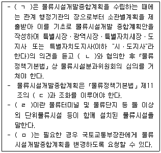
- ㄱ: 국토교통부장관과 해양수산부장관
- ㄴ: 해당 시ㆍ도지사
- ㄷ: 국가물류기본계획
- ㄹ: 연계물류시설
- ㅁ: 시ㆍ도지사
(정답률: 42%)
56. 물류시설의 개발 및 운영에 관한 법령상 물류단지개발사업의 시행자에 관한 설명으로 옳지 않은 것은?
- 시행자는 물류단지개발실시계획을 수립하여 승인을 받은 사항 중 대통령령으로 정하는 중요 사항을 변경하려는 경우에는 물류단지지정권자의 승인을 받아야 한다.
- 시행자는 물류단지개발사업을 시행할 때 필요하면 국가 또는 지방자치단체에 서류의 열람 또는 등사를 하거나 그 등본 또는 초본의 교부를 청구할 수 있다.
- 시행자는 물류단지개발사업의 시행으로 국가 또는 지방자치단체에 귀속될 공공시설과 시행자에게 귀속되거나 양도될 재산의 종류와 토지의 세부목록을 그 물류단지개발사업의 준공 후 지체 없이 관리청에 통지하여야 한다.
- 시행자는 물류단지개발사업의 전부 또는 일부를 완료하여 물류단지지정권자의 준공인가를 받은 때에는 실시계획승인으로 의제되는 인ㆍ허가등에 따른 해당 사업의 준공에 관한 검사ㆍ인가ㆍ신고ㆍ확인 등을 받은 것으로 본다.
- 시행자는「공익사업을 위한 토지 등의 취득 및 보상에 관한 법률」로 정하는 바에 따라 물류단지개발사업으로 인하여 생활의 근거를 상실하게 되는 자에 대한 이주대책 등을 수립ㆍ시행하여야 한다.
(정답률: 22%)
57. 화물자동차 운수사업법상 화물자동차의 운송사업에 관한 내용이다. ( )안에 들어갈 용어가 순서대로 옳게 연결된 것은?
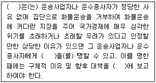
- 국토교통부장관 - 업무개시 - 국무회의
- 국토교통부장관 - 개선 - 국가물류정책위원회
- 국무총리- 업무개시 - 국가물류정책위원회
- 국토교통부장관 - 개선 - 국회 소관 상임위원회
- 국토교통부장관- 업무개시- 국회 소관 상임위원회
(정답률: 35%)
58. 화물자동차 운수사업법상 화물자동차 운송주선사업에 관한 설명으로 옳지 않은 것은?
- 화물자동차 운송주선사업의 허가를 받은 자가 허가사항을 변경하려면 국토교통부장관에게 그에 대한 변경 허가를 다시 받아야 한다.
- 운송주선사업자는 자기 명의로 다른 사람에게 화물자동차 운송주선사업을 경영하게 할 수 없다.
- 운송주선사업자는 화주로부터 중개 또는 대리를 의뢰받은 화물에 대하여 다른 운송주선사업자에게 수수료나 그 밖의 대가를 받고 중개 또는 대리를 의뢰하여서는 아니 된다.
- 운송가맹점인 운송주선사업자는 자기가 가입한 운송가맹사업자에게 소속된 운송가맹점에 대하여 화물운송을 주선하여서는 아니 된다.
- 운송주선사업자는 주사무소 외의 장소에서 상주하여 영업하려면 국토교통부장관의 허가를 받아 영업소를 설치하여야 한다.
(정답률: 23%)
59. 화물자동차 운수사업법상 화물자동차 운송가맹사업에 관한 설명으로 옳은 것은?
- 국토교통부장관은 운송가맹사업자가 거짓으로 허가를 받은 경우 6개월 이내의 기간을 정하여 사업의 전부의 정지를 명할 수 있다.
- 운송사업자인 운송가맹점은 운송가맹사업자가 정한 기준에 맞는 운송서비스의 제공을 성실히 이행하여야 한다.
- 운송사업자인 운송가맹점은 화물자동차 운송가맹사업의 원활한 수행을 위하여 운송가맹사업자에 대한 운송화물의 확보ㆍ공급을 성실히 이행하여야 한다.
- 운송주선사업자인 운송가맹점은 화물의 원활한 운송을 위하여 차량 위치의 통지를 성실히 이행하여야 한다.
- 운송가맹점은 화물자동차 운송가맹사업의 원활한 수행을 위하여 화물의 원활한 운송을 위한 공동전산망을 설치ㆍ운영하여야 한다.
(정답률: 41%)
60. 화물자동차 운수사업법상 운송사업자의 준수사항에 관한 설명으로 옳지 않은 것은?
- 운송사업자는 허가 받은 사항의 범위에서 사업을 성실하게 수행하여야 하며, 부당한 운송조건을 제시하거나 정당한 사유 없이 운송계약의 인수를 거부하거나 그 밖에 화물운송 질서를 현저하게 해치는 행위를 하여서는 아니 된다.
- 운송사업자는 둘 이상의 화물자동차 운송가맹점에 가입하여서는 아니 된다.
- 운송사업자는 위ㆍ수탁계약으로 차량을 현물출자 받은 경우에는 위ㆍ수탁차주를「자동차관리법」에 따른 자동차등록원부에 현물출자자로 기재하여야 한다.
- 운송사업자는 위ㆍ수탁차주가 다른 운송사업자와 동시에 1년 이상의 운송계약을 체결하는 것을 제한 하거나 이를 이유로 불이익을 주어서는 아니 된다.
- 위ㆍ수탁차주가 현물출자한 차량에 대하여 보험료 납부 등 위ㆍ수탁차주가 이행하여야 하는 차량관리 의무의 해태로 인하여 운송사업자의 채무가 발생하였을 경우, 운송사업자는 재량으로 그 차량에 대하여 채무액을 초과하여 저당권을 설정할 수 있다.
(정답률: 48%)
61. 화물자동차 운수사업법상 특별시장ㆍ광역시장ㆍ특별자치시장ㆍ특별자치도지사ㆍ시장 또는 군수가 운수사업자에 대하여 재정지원을 한 경우, 그 보조금의 지급을 정지하여야 하는 경우로 명시되지 않은 것은?
- 「석유 및 석유대체연료 사업법」에 따른 석유판매업자로부터「부가가치세법」에 따른 세금계산서를 거짓으로 발급받아 보조금을 지급받은 경우
- 석유판매업자로부터 석유의 구매를 가장하거나 실제 구매금액을 초과하여「여신전문금융업법」에 따른 신용카드, 직불카드, 선불카드에 의한 거래를 하거나 이를 대행하게 하여 보조금을 지급받은 경우
- 화물자동차 운수사업이 아닌 다른 목적에 사용한 유류분에 대하여 보조금을 지급받은 경우
- 특별시장ㆍ광역시장ㆍ특별자치시장ㆍ특별자치도지사ㆍ시장 또는 군수의 보조금 지급에 관한 소명서 제출 요구에 따라 전자문서의 형태로 이를 제출하는 경우
- 다른 운송사업자 등이 구입한 유류 사용량을 자기가 사용한 것으로 위장하여 보조금을 지급받은 경우
(정답률: 59%)
62. 화물자동차 운수사업법령상 화주(貨主)가 화물자동차에 함께 탈 때, 여객자동차 운송사업용 자동차에 싣기 부적합한 화물의 기준으로 옳은 것을 모두 고른 것은?
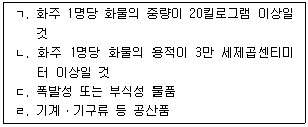
- ㄱ, ㄴ
- ㄷ, ㄹ
- ㄱ, ㄷ, ㄹ
- ㄴ, ㄷ, ㄹ
- ㄱ, ㄴ, ㄷ, ㄹ
(정답률: 41%)
63. 화물자동차 운수사업법령상 운송사업자의 직접운송 의무 등에 관한 내용으로 옳은 것은?
- 소유 대수가 1대인 일반화물자동차 운송사업자는 연간 운송계약 화물의 100분의 50 이상을 직접 운송하여야 한다.
- 일반화물자동차 운송사업자와 6개월 이상의 운송계약을 맺은 다른 운송사업자 소속의 화물자동차로 운송하는 경우에는 직접 운송한 것으로 본다.
- 운송사업자가 운송주선업을 동시에 영위하는 경우에는 직접 운송의무를 부담하지 않는다.
- 소유대수가 2대 이상인 일반화물자동차 운송사업자는 사업기간이 1년 미만인 경우 신규허가를 받은 날 또는 휴업 후 사업개시일부터 그 해 12월 31일까지의 운송계약 화물을 기준으로 100분의 50 이상을 직접 운송하여야 한다.
- 운송사업자가 위탁운송 화물의 100분의 50 이상을 운송가맹사업자의 화물정보망을 이용하여 운송을 위탁한 경우 직접 운송한 것으로 본다.
(정답률: 32%)
64. 화물자동차 운수사업법상 지방자치단체, 사업자단체 또는 운수사업자에 대하여 재정적 지원이 필요하다고 인정되면 국가가 소요자금의 일부를 보조하거나 융자할 수 있는 사업을 모두 고른 것은?
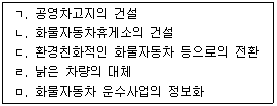
- ㄱ, ㄴ, ㄷ
- ㄱ, ㄹ, ㅁ
- ㄴ, ㄷ, ㅁ
- ㄱ, ㄴ, ㄹ, ㅁ
- ㄱ, ㄴ, ㄷ, ㄹ, ㅁ
(정답률: 49%)
65. 화물자동차 운수사업법상 경영의 합리화에 관한 내용으로 옳은 것은?
- 운송사업자는 화물자동차 운송사업의 효율적인 수행을 위하여 필요하면 다른 사람(운송사업자를 제외한 개인)에게 차량과 그 경영의 일부를 위탁하거나 차량을 현물출자한 사람에게 그 경영의 일부를 위탁할 수 있다.
- 국토교통부장관은 경영실태가 부실하다고 인정되는 운수사업자에게는 경영개선을 명할 수 있으며, 경영개선에 관한 중ㆍ장기 또는 연차별 계획 등을 제출하도록 하여야 한다.
- 운송사업자와 위ㆍ수탁차주는 대등한 입장에서 합의에 따라 공정하게 위ㆍ수탁계약을 체결ㆍ이행하여야 하며, 위ㆍ수탁계약의 기간은 1년 이상으로 하여야 한다.
- 운송사업자는 위ㆍ수탁차주가 위ㆍ수탁계약기간 만료 전 200일부터 30일까지 사이에 위ㆍ수탁계약의 갱신을 요구하는 경우, 최초 위ㆍ수탁계약의 기간을 포함한 전체 위ㆍ수탁계약 기간이 3년을 초과하는 경우에는 이를 거절할 수 있다.
- 운송사업자는 위ㆍ수탁계약을 해지하려는 경우에는 위ㆍ수탁차주에게 1개월 이상의 유예기간을 두고 계약의 위반 사실을 구체적으로 밝히고 이를 시정하지 아니하면 그 계약을 해지한다는 사실을 서면 등의 방법으로 3회 이상 통지하여야 한다.
(정답률: 35%)
66. 화물자동차 운수사업법상 공제조합의 사업으로 명시되지 않은 것은?
- 화물자동차 운수사업의 경영 개선을 위한 조사ㆍ연구 사업
- 공제조합에 고용된 자의 업무상 재해로 인한 손실을 보상하기 위한 공제
- 공동이용시설의 설치ㆍ운영 및 관리를 위한 사업
- 조합원의 비사업용 자동차의 사고로 생긴 배상 책임에 대한 공제
- 조합원의 편의 및 복지 증진을 위한 사업
(정답률: 57%)
67. 항만운송사업법령상 항만운송관련사업의 종류 중 항만용역업의 내용에 해당되지 않는 것은?
- 선박의 폐기물의 수집ㆍ운반을 하는 행위
- 선박의 유창(油艙) 청소를 하는 행위
- 선박에서 사용하는 맑은 물을 공급하는 행위
- 선박의 오물 제거를 하는 행위
- 본선의 이안(離岸) 및 접안(接岸)을 보조하기 위하여 줄잡이 역무(役務)를 제공하는 행위
(정답률: 50%)
68. 항만운송사업법령상 항만운송에서 제외되는 운송을 모두 고른 것은?
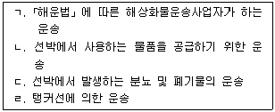
- ㄱ, ㄴ
- ㄷ, ㄹ
- ㄱ, ㄴ, ㄷ
- ㄴ, ㄷ, ㄹ
- ㄱ, ㄴ, ㄷ, ㄹ
(정답률: 27%)
69. 항만운송사업법상 항만운송사업에 관한 설명으로 옳지 않은 것은?
- 항만하역사업과 검수사업은 항만별로 등록한다.
- 항만운송사업의 등록을 신청하려는 자는 해양수산부령으로 정하는 바에 따라 사업계획을 첨부한 등록신청서를 해양수산부장관에게 제출하여야 한다.
- 검수사업의 등록을 한 자는 해양수산부령으로 정하는 바에 따라 요금을 정하여 해양수산부장관의 인가를 받아야 한다.
- 「민사집행법」에 따른 경매절차에 따라 항만운송사업의 시설ㆍ장비 전부를 인수한 자는 종전의 항만운송사업자의 권리ㆍ의무를 승계한다.
- 해양수산부장관은 항만운송사업자가 사업정지명령을 위반하여 그 정지기간에 사업을 계속한 경우에는 그 등록을 취소하여야 한다.
(정답률: 50%)
70. 유통산업발전법령상 산업통상자원부장관이 공동집배송센터의 지정을 취소하여야 하는 경우에 해당 하는 것은?
- 거짓이나 그 밖의 부정한 방법으로 공동집배송센터의 지정을 받은 경우
- 공동집배송센터의 지정을 받은 날부터 5년 이내에 준공되지 아니하여 정상적인 사업추진이 곤란하다고 인정되는 경우
- 공동집배송센터의 지정을 받은 날부터 정당한 사유 없이 3년 이내에 시공을 하지 아니하는 경우
- 공동집배송센터의 지정요건 및 시설ㆍ운영 기준에 미달하여 산업통상자원부장관이 공동집배송센터사업자에 대하여 시정명령을 하였으나 이를 이행하지 아니하는 경우
- 공동집배송센터사업자가 파산하여 정상적인 사업추진이 곤란하다고 인정되는 경우
(정답률: 55%)
71. 유통산업발전법을 적용하지 아니하는 시장ㆍ사업장 및 매장에 해당하는 것을 모두 고른 것은?
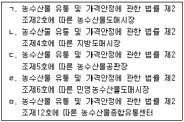
- ㄱ, ㄴ
- ㄱ, ㄴ, ㄷ
- ㄱ, ㄴ, ㄷ, ㄹ
- ㄱ, ㄷ, ㄹ, ㅁ
- ㄴ, ㄷ, ㄹ, ㅁ
(정답률: 48%)
72. 유통산업발전법상 대규모점포등에 관한 설명으로 옳지 않은 것은?
- 전통상업보존구역에 준대규모점포를 개설하려는 자는 영업을 시작하기 전에 산업통상자원부령으로 정하는 바에 따라 상권영향평가서 및 지역협력계획서를 첨부하여 특별자치시장ㆍ시장ㆍ군수ㆍ구청장에게 등록하여야 한다.
- 특별자치시장ㆍ시장ㆍ군수ㆍ구청장은 대규모점포를 개설하려는 자가 제출한 상권영향평가서 및 지역협력계획서가 미진하다고 판단하는 경우 제출받은 날부터 60일 이내에 그 사유를 명시하여 보완을 요청할 수 있다.
- 대규모점포등을 개설하려는 자는 영업을 시작하기 30일 전까지 개설 지역 및 시기 등을 포함한 개설 계획을 예고하여야 한다.
- 특별자치시장ㆍ시장ㆍ군수ㆍ구청장은 대규모점포 등의 개설등록을 한 자가 대규모점포등의 영업을 정당한 사유 없이 1년 이상 계속하여 휴업한 경우에는 그 등록을 취소하여야 한다.
- 특별자치시장ㆍ시장ㆍ군수ㆍ구청장은 연간 총매출액 중「농수산물 유통 및 가격안정에 관한 법률」에 따른 농수산물의 매출액 비중이 55퍼센트 이상인 대규모점포등으로서 해당 지방자치단체의 조례로 정하는 대규모점포등에 대하여는 영업시간 제한을 명할 수 없다.
(정답률: 14%)
73. 유통산업발전법령상 우수도매배송서비스사업자의 지정 등에 관한 내용으로 옳지 않은 것은?
- 우수도매배송서비스사업자로 지정받으려면 자본금 또는 출자금이 5억원 이상이어야 한다.
- 우수도매배송서비스사업자로 지정받으려면 도매배송실적 등 사업실적이 산업통상자원부령으로 정하는 기준에 적합하여야 한다.
- 우수도매배송서비스사업자로 지정받으려면 집배송 시설의 면적이 1천제곱미터 이상이어야 한다.
- 산업통상자원부장관은 지정받은 우수도매배송서비스사업자가 지정기준에 미달하는 경우에는 그 지정을 취소하고 관계 중앙행정기관의 장 및 지방자치단체의 장에게 지체 없이 알려야 한다.
- 산업통상자원부장관은 지정된 우수도매배송서비스 사업자가 인증물류설비의 도입 업무를 수행하는 경우에는 필요한 자금을 지원할 수 있다.
(정답률: 32%)
74. 유통산업발전법상 대규모점포등에 관한 설명으로 옳은 것은?
- 매장이 분양된 대규모점포 및 등록 준대규모점포에서는 입점상인(入店商人) 2분의 1 이상이 동의하여 설립한「민법」또는「상법」에 따른 법인이 상거래질서의 확립의 업무를 수행한다.
- 매장이 분양된 대규모점포 및 등록 준대규모점포에서는 매장면적의 3분의 1 이상을 직영하는 자가 있는 경우 그 직영하는 자는 소비자의 안전유지의 업무를 수행한다.
- 특별자치시장ㆍ시장ㆍ군수ㆍ구청장은 대규모점포 등 개설자가 정당한 사유 없이 등록후 6개월 이내에 영업을 시작하지 아니한 경우에는 그 등록을 취소하여야 한다.
- 대규모점포등개설자가 대규모점포등을 양도한 경우 그 양수인은 대규모점포등개설자의 지위를 승계할 수 없다.
- 대규모점포등개설자는 인근 지역주민의 피해ㆍ불만을 신속히 처리하는 업무를 수행한다.
(정답률: 50%)
75. 철도사업법상 운임ㆍ요금에 관한 설명으로 옳지 않은 것은?
- 철도사업자는 운임ㆍ요금을 국토교통부장관에게 신고하여야 하고, 이를 변경하려는 경우 변경신고를 하여야 한다.
- 여객 운임은 여객운송에 대한 직접적인 대가와 여객운송과 관련된 설비ㆍ용역에 대한 대가를 포함한다.
- 국토교통부장관은 여객 운임의 상한을 지정하려면 미리 기획재정부장관과 협의하여야 한다.
- 철도사업자는 국토교통부장관에게 신고 또는 변경신고를 한 운임ㆍ요금을 그 시행 1주일 이전에 인터넷 홈페이지, 관계 역ㆍ영업소 및 사업소 등 일반인이 잘 볼 수 있는 곳에 게시하여야 한다.
- 철도사업자는 열차를 이용하는 여객이 정당한 승차권을 지니지 아니하고 열차를 이용한 경우에는 승차 구간에 해당하는 운임 외에 그의 30배의 범위에서 부가 운임을 징수할 수 있다.
(정답률: 22%)
76. 철도사업법령상 철도사업자가 철도사업약관에 기재하여 신고하여야 할 사항으로 명시되지 않은 것은?
- 철도사업약관의 적용범위
- 철도사업경영의 수지균형에 관한 사항
- 철도운임ㆍ요금의 수수 또는 환급에 관한 사항
- 부가운임에 관한 사항
- 운송책임 및 배상에 관한 사항
(정답률: 59%)
77. 철도사업법령상 국토교통부장관의 철도사업자에 대한 행정처분의 기준 중 ( )안에 들어갈 내용이 옳지 않은 것은?(문제 오류로 모두 정답처리 되었습니다. 여기서는 1번을 누르면 정답 처리 됩니다.)
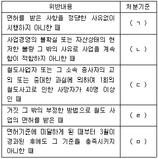
- ㄱ: 사업일부정지 20일
- ㄴ: 사업일부정지 30일
- ㄷ: 사업일부정지 120일
- ㄹ: 사업면허취소
- ㅁ: 사업면허취소
(정답률: 39%)
78. 철도사업법령상 전용철도에 관한 설명으로 옳은 것은?
- 전용철도운영자가 그 운영의 일부를 폐업한 경우에는 3개월 이내에 국토교통부장관에게 신고하여야 한다.
- 전용철도의 운영을 양도ㆍ양수하려는 자는 국토교통부령으로 정하는 바에 따라 양도ㆍ양수한 날부터 3개월 이내에 국토교통부장관의 허가를 받아야 한다.
- 국토교통부장관은 전용철도 운영의 건전한 발전을 위하여 필요하다고 인정하는 경우에는 전용철도운영자에게 사업장의 이전, 시설 및 운영의 개선을 권고하여야 한다.
- 전용철도운영자가 사망한 경우 상속인이 그 전용철도의 운영을 계속하려는 경우에는 피상속인이 사망한 날부터 3개월 이내에 국토교통부장관에게 신고하여야 한다.
- 전용철도를 운영하려는 자는 국토교통부령으로 정하는 바에 따라 전용철도의 건설ㆍ운전ㆍ보안 및 운송에 관한 사항이 포함된 운영계획서를 첨부하여 국토교통부장관의 허가를 받아야 한다.
(정답률: 40%)
79. 농수산물 유통 및 가격안정에 관한 법령상 농수산물의 생산조정 및 출하조절에 관한 설명으로 옳지 않은 것은?
- 주산지의 지정은 시ㆍ도 단위로 한다.
- 시ㆍ도지사는 지정된 주산지가 지정요건에 적합하지 아니하게 되었을 때에는 그 지정을 변경하거나 해제할 수 있다.
- 농림축산식품부장관 또는 해양수산부장관은 예시가격(豫示價格)을 결정할 때에는 미리 기획재정부장관과 협의하여야 한다.
- 농림축산식품부장관은 몰수농산물등의 처분업무를 농업협동조합중앙회 또는 한국농수산식품유통공사 중에서 지정하여 대행하게 할 수 있다.
- 농림축산식품부장관 또는 해양수산부장관은 유통 명령이 이행될 수 있도록 유통명령의 내용에 관한 홍보, 유통명령 위반자에 대한 제재 등 필요한 조치를 하여야 한다.
(정답률: 28%)
80. 농수산물 유통 및 가격안정에 관한 법률상 도매시장에 관한 설명으로 옳지 않은 것은?
- 시가 개설하는 지방도매시장의 개설구역에 인접한 구역으로서 그 지방도매시장이 속한 도의 일정 구역에 대하여는 해당 도지사가 그 지방도매시장의 개설구역으로 편입하게 할 수 있다.
- 도매시장 개설자는 관리사무소 또는 시장관리자로 하여금 시설물관리, 거래질서 유지, 유통 종사자에 대한 지도ㆍ감독 등에 관한 업무 범위를 정하여 해당 도매시장 또는 그 개설구역에 있는 도매시장의 관리업무를 수행하게 할 수 있다.
- 도매시장 개설자는 소속 공무원으로 구성된 도매시장 관리사무소를 두거나 농림수협중앙회를 시장관리자로 지정하여야 한다.
- 도매시장법인은 도매시장 개설자가 부류(部類)별로 지정하되, 중앙도매시장에 두는 도매시장법인의 경우에는 농림축산식품부장관 또는 해양수산부장관과 협의하여 지정한다.
- 도매시장법인이 다른 도매시장법인을 인수하거나 합병하는 경우에는 해당 도매시장 개설자의 승인을 받아야 한다.
(정답률: 10%)
ㄱ. 대량구매로 인한 가격할인 효과
ㄷ. 물량집중으로 인한 빠른 배송 및 공급 안정성
ㄹ. 효율적인 재고관리로 인한 비용절감 효과
ㅂ. 고객들의 구매력 집중으로 인한 협상력 증대
따라서, 정답은 "ㄱ, ㄷ, ㄹ, ㅂ" 이다.